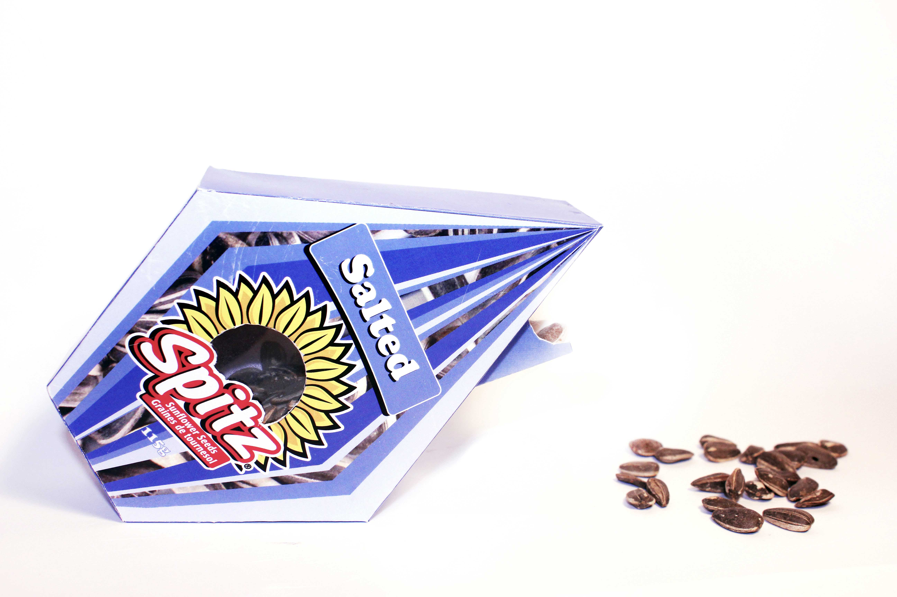
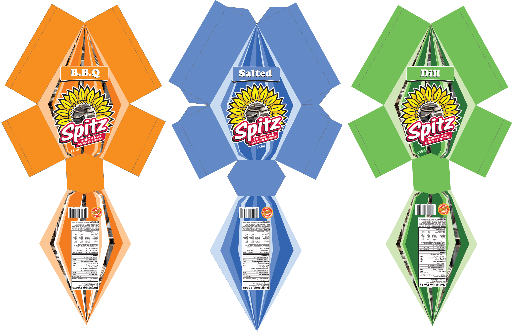
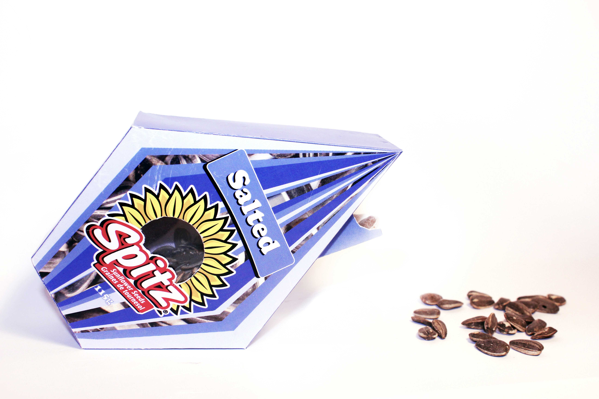
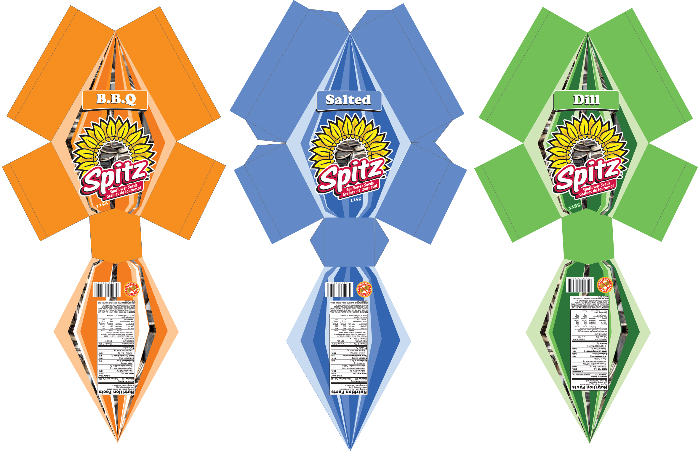

Spitz Sunflower Seeds – Package Design Concept
The purpose of this product is to re-design the packaging concept into a more eco-friendly package. Spitz sunflower seeds sell their entire product in plastic bags with plastic zipper concealers. Spitz carries several different sizes of bags. I wanted to focus on the traveler pack. I also wanted to focus on the concept of having a convenient and also eco-friendly way to consume this product. This packed design my unique selling point is the pull out pocket. It is a system in which the consumer receives the seeds in a faster and more convenient way. It acts as a door, always avaibale on the exterior of the box. To execute this concept in an eco-friendly way I created a sunflower seed shapes box. It is made out of recyclable card stock and a very small piece of paper-thin plastic. This product is completely durable yet uses a very thin amount of materials. For the design of the product I used shades of the original branding colour to reflect to imagery of a sunflower seeds. I also added the photographed sunflower seeds to help imply with is inside. While researching I found they in the packaging they consistently use the center of the sunflower on their logo as a window for the inside of the bag. In my packaging design I continued this theme, hence the reason for the small piece of plastic. The original packaging is very simple and plain.I wanted to take this opportunity to play with the mood of their packaging. This packing design is a great balance of good design and an eco-friendly product. Its shape makes it fun and interesting to display it and also easy to stack and ship. It’s its convenient pull pocket makes it attractive to frequent users and is a lot better than the original big plastic zipper. Overall the packaging design gives the comsumer a new way to enjoy their favouite on the go snack in much more earthly matter.
 


